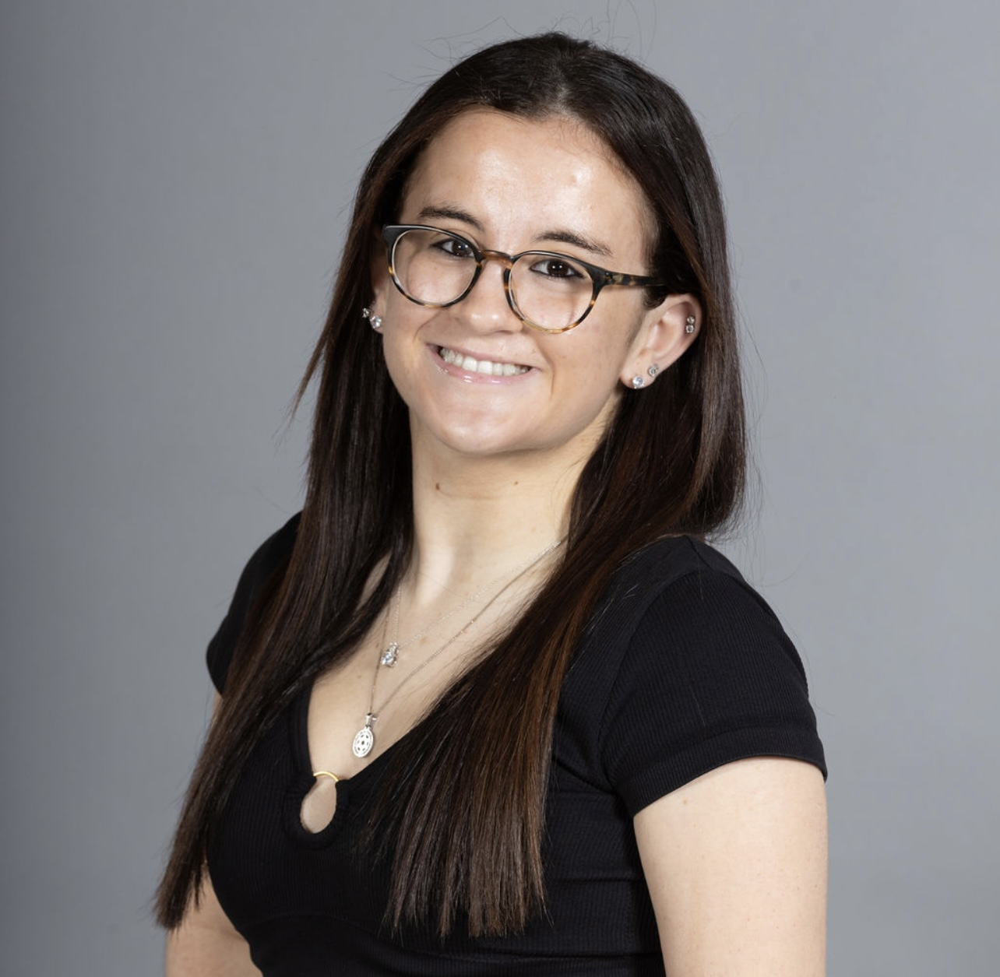

I support students in the TerpsEXCEED program, a 2-year program for students with intellectual disabilities, through social interaction and academic guidance. Received College Reading & Learning Association (CRLA) level 1 Peer Mentor Certification.
Pitched 5 stories weekly for editorial approval, publishing at least one article per week. Reported stories include City Council Meetings, public safety initiatives and conservation efforts at Gumbo Limbo Nature Center.
Led a group of approx. 10 campers with intellectual disabilities through daily activities and supported individual behavior with different support strategies. I also managed Camp Kavod's social media by creating daily content for Facebook and Instagram that highlighted the camp's mission of inclusion.
Pitched and wrote stories on entertainment, campus culture, and student life for the UMD chapter of a national digital publication. Published stories include coverage of Maryland men’s basketball and features on TerpsEXCEED and the campus food pantry.
Reported and published campus event coverage for UMD’s independent student newspaper. Feature stories include coverage of an engineering class project and an event hosted by Xfoundry and UMD Athletics about succeeding in sports and business.
Selected for a two-year living-learning program focused on media literacy, representation, and social impact through field trips, guest speakers, and hands-on projects. Mentored first-year students with 1:1 monthly meetings focused on career and academic guidance. Created Instagram reels, infographics, and carousels promoting program events and student highlights.